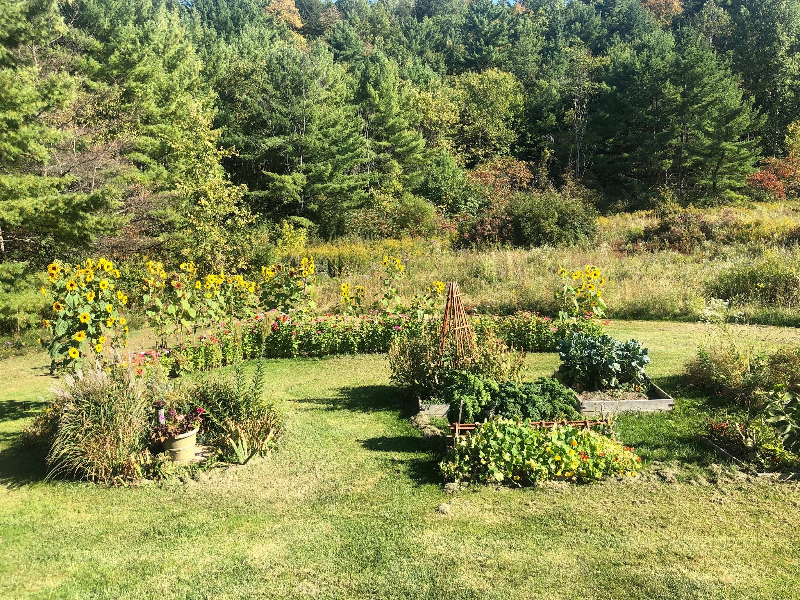
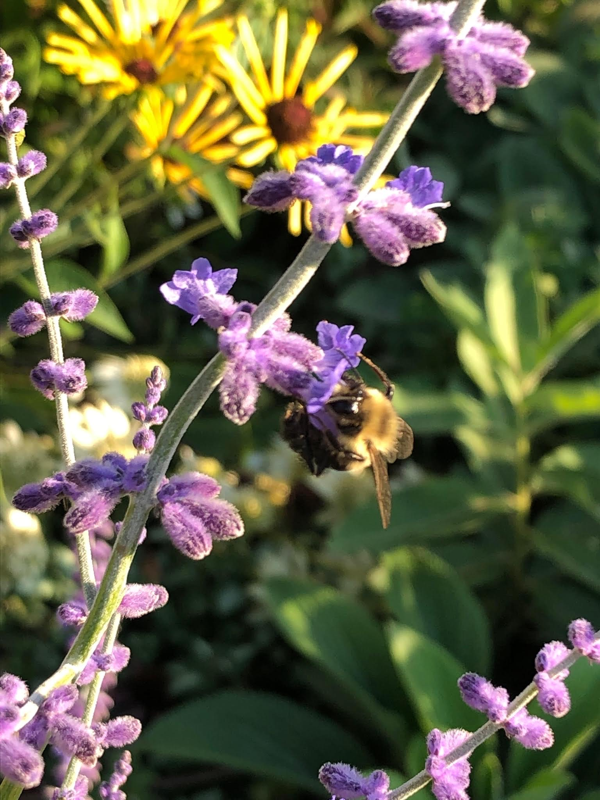
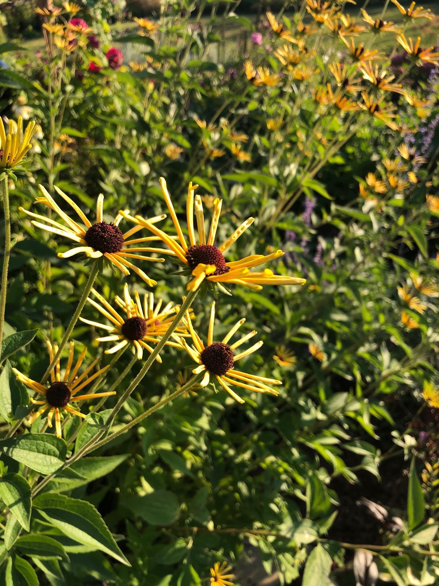

September 2019
September 2019 Blooms

September leaves me with a sense of mourning, a delightful season of new and spectacular flowers and colors has gone by and winter will be upon us. There are so many annual blooms, fruits, vegetables, and perennial flowers still blooming that I fear the first frost will leave my pollinator paradise brown and colorless. I’m always listening to hear of the next frost or freeze in the weather forecast, hoping to squeeze in a few more days of flowering from our sunflowers and zinnias.
Now at the end of this productive gardening season, I’m enjoying the bright red hues of hibiscus and autumn sedum, the white flowers of spearmint, and yellow ‘Henry Eilers’ rudbeckia. The ornamental grasses, now six or seven feet tall, glow yellow and red. Maiden grass has grown tassels and the birds (and our dogs) are enjoying romping through them.
Swaying six-foot-tall aster dances in the cool autumn breeze as it passes through our fields and gardens. I simply love how it dips down to the ground, making the plant seem bigger. Chelone lyonii ‘hot lips’ brightens the garden border with its inviting color and shape.

I’m already looking to next year’s garden with hope for additional pollinators, new perennial fruits, and native plants. The arrival of the amazing Fedco catalog has kept me up at night. I’m laying out a new garden bed that will include grapes, kiwi, Russian sage, black cohosh, and many more. The vision of a new space comes together with time and often through spontaneous selection. I hate to toss any plant divides and so we create more gardens.

Filed in the garden journal · September 2019